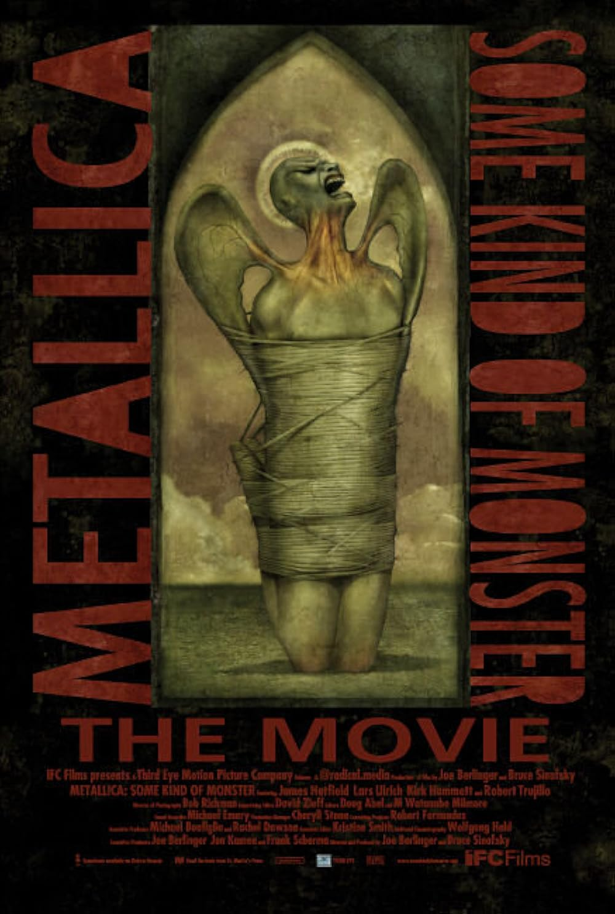
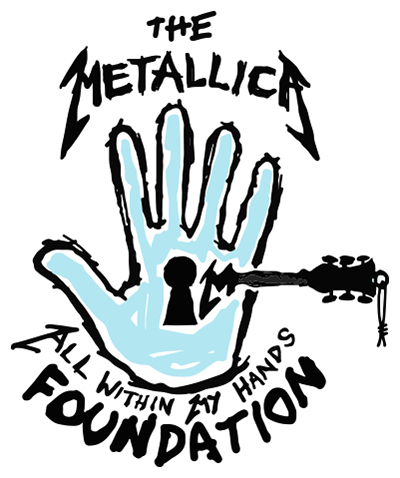
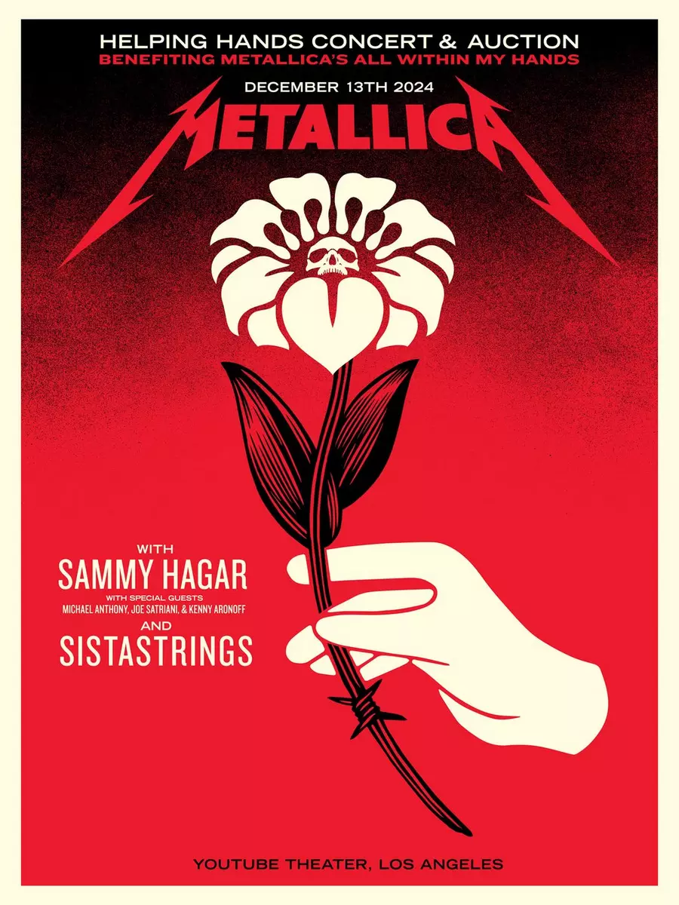
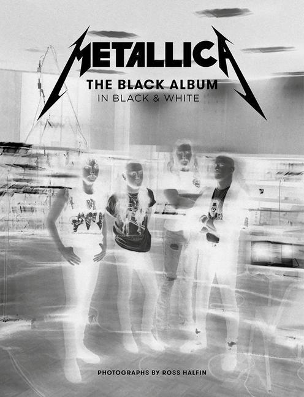

Filmek

Through the Never
A Metallica látványos koncertfilmje, amely egy fiktív történetet ötvöz élő koncertfelvételekkel.
Megtekintés
Some Kind of Monster
Dokumentumfilm a zenekar egyik legnehezebb időszakáról és a St. Anger album elkészítéséről.
MegtekintésMetallica Saved My Life
Dokumentumfilm, amely a rajongók történetein keresztül mutatja be a zenekar hatását.
MegtekintésEgyéb projektek

All Within My Hands
A Metallica jótékonysági alapítványa, amely oktatási és közösségi programokat támogat világszerte.
Megtekintés
Helping Hands Concert
Jótékonysági koncertsorozat, amely az alapítvány munkáját támogatja különleges fellépésekkel.
Megtekintés
The Black Album in Black & White
Fotókönyv, amely ritka képeken keresztül mutatja be a legendás Black Album korszakát.
Megtekintés